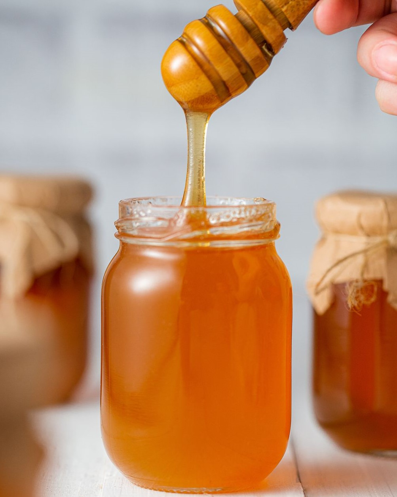

Inicio / Frasco de Mel de Rosmaninho
Frasco de Mel de Rosmaninho 1kg
Detalhes do Produtos
O Mel, apesar de ser bastante usado como alternativa ao açúcar tradicional, é um adoçante natural também conhecido pelas suas propriedades terapêuticas. Cada mel é único, cada um tem a sua cor, viscosidade e sabor, estes fatores dependem do tipo de flores, das zonas geográficas onde é produzido e das condições climatéricas.